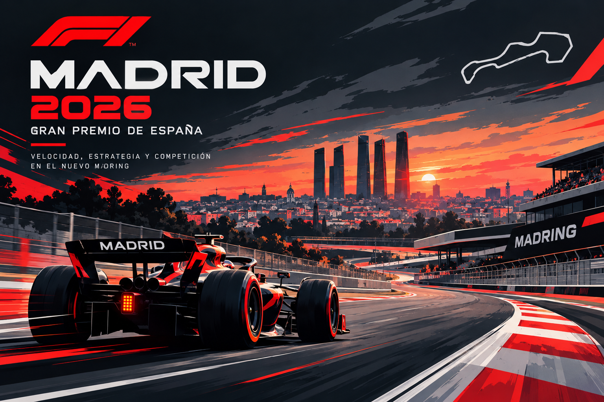

Gran Premio de España 2026
El Gran Premio de España de Fórmula 1 de 2026 se celebró en el nuevo circuito Madring, situado en Madrid. Esta carrera supone una nueva etapa para la Fórmula 1 en la capital española.
En este sitio web encontrarás información sobre el circuito, los resultados de la carrera, los pilotos y las escuderías participantes, además de diferentes curiosidades sobre el Gran Premio.

Datos destacados
- Gran Premio: España 2026
- Ciudad: Madrid
- Circuito: Madring
- Fecha: 13 de septiembre de 2026
- Longitud del circuito: 5,414 km
- Número de vueltas: 57
- Ganador: Kimi Antonelli
- Escudería ganadora: Mercedes
¿Qué es el Madring?
El Madring es el circuito que acoge el Gran Premio de España de Fórmula 1 en Madrid. El trazado combina diferentes tipos de curvas y zonas de alta velocidad, ofreciendo un recorrido pensado para poner a prueba a pilotos y monoplazas.
En la página oficial de Fórmula 1 puedes consultar información adicional sobre el Gran Premio de España y el circuito Madring.